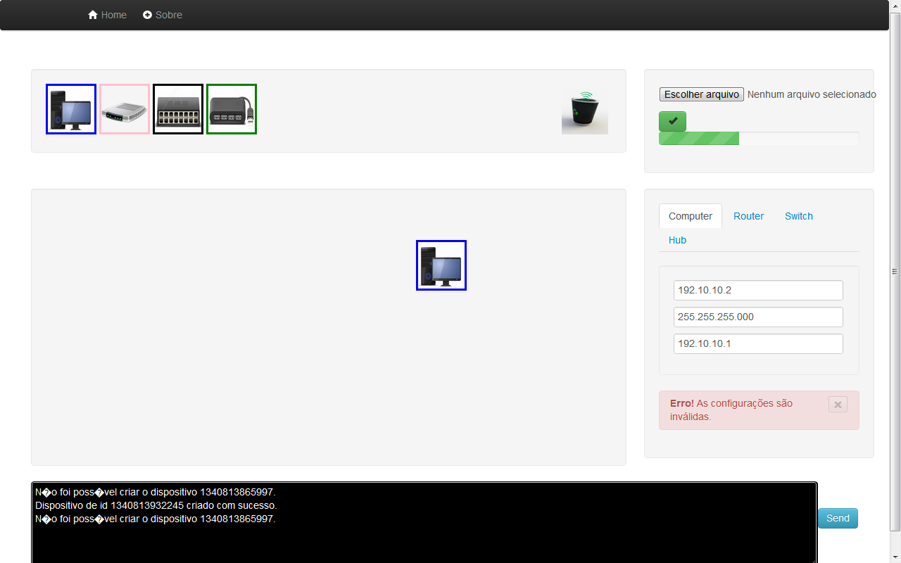

A ferramenta que está sendo proposta procura evitar a complexidade de algumas ferramentas analisadas e será introduzida no ambiente educacional quando do estudo de endereçamento IP, que é um assunto abordado na camada de redes. O simulador poderá ser executado localmente ou disponibilizado via internet através de um servidor Apache-Tomcat. O usuário deve efetuar o seu registro caso deseje salvar os seus projetos e as suas configurações.
A interface da ferramenta é bastante intuitiva, bastando o usuário clicar e arrastar os componentes (host, roteadores, switches e hubs) que formarão a rede, preencher as especificações técnicas de cada objeto (endereçamento IP) e realizar os seus testes de conectividade (ping). A grande vantagem de poder utilizar uma ferramenta online é o fato de não haver a necessidade de se possuir permissões especiais para a instalação de programas adicionais nos laboratórios das escolas e universidades de cujos computadores costumam estar
Essa ferramenta está em fase inicial de construção e atualmente suporta o comando de Ping, para verificar se um determinado computador está na rede.
A idéia é que ela possa suportar outros tipos de comandos bem como, protocolos de rede.
{kind=link}